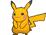

-
Bulbasaur #001

- Planta
- Veneno
Há uma semente de planta em suas costas desde o dia que este Pókemon nasce. A semente cresce lentamente.
-
Ivysaur #002

- Planta
- Veneno
Quando o bulbo em suas costas cresce, parece perder a capacidade de ficar de pé em suas patas traseiras.
-
Venusaur #003

- Planta
- Veneno
Sua planta floresce quando está absorvendo energia solar. Ele permanece em movimento para buscar a luz solar.
-
Charmander #004

- Fogo
Tem preferência por coisas quentes. Quando chove, diz-se que o vapor jorra da ponta de sua cauda.
-
Charmeleon #005

- Fogo
Tem uma natureza bárbara. Na batalha, ele chicoteia sua cauda ardente e corta com garras afiadas.
-
Charizard #006

- Fogo
Ele cospe fogo que é quente o suficiente para derreter pedregulhos. Pode causar incêndios florestais soprando chamas.
-
Squirtle #007

- Água
Quando ele retrai seu longo pescoço em sua concha, ele esguicha água com força vigorosa.
-
Wartortle #008

- Água
É reconhecido como um símbolo de longevidade. Se sua concha tem algas, esse Wartortle é muito antigo.
-
Blastoise #009

- Água
Ele esmaga seu inimigo sob seu corpo pesado para causar desmaios. Em uma pitada, ele se retirará dentro de sua concha.
-
Caterpie #010

- Inseto
Para proteção, ele libera um fedor horrível da antena em sua cabeça para afastar os inimigos.
-
Sunflora #011

- Planta
O poder de Sunflora está mais relacionado com seus movimentos e habilidades. Ele pode aprender uma variedade de movimentos de tipo Planta, como Solar Beam, Giga Drain e Leaf Storm, que são ataques poderosos contra Pokémon de tipos como Água, Pedra e Terrestre...
-
Vivillon Meadow #012
- Inseto
Suas estatísticas de Ataque e Defesa são relativamente baixas, mas ele compensa isso com uma boa Velocidade e Ataque Especial.
-
Rockruff #013

- Rocha
Ele possui duas habilidades diferentes, dependendo de sua forma evoluída.
-
Pikachu #014
- Elétrico
A habilidade específica de um Pikachu individual será determinada principalmente pelo método de obtenção e pelo jogo em que está sendo utilizado.
-
Rillaboom #15
- Planta
Pokémon forte e versátil, com uma presença imponente em batalhas. Sua combinação de estatísticas equilibradas.